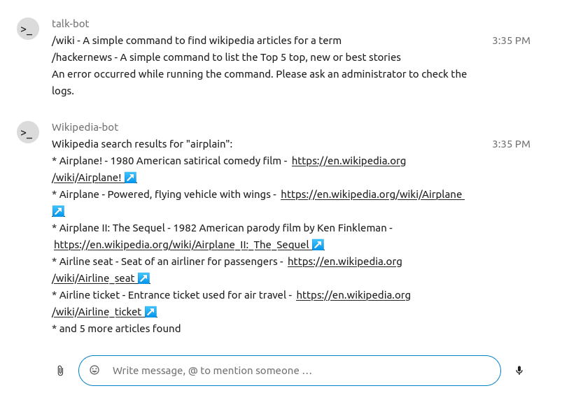
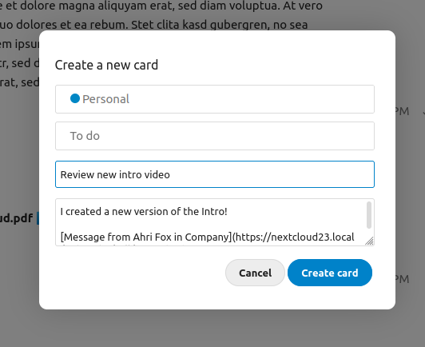
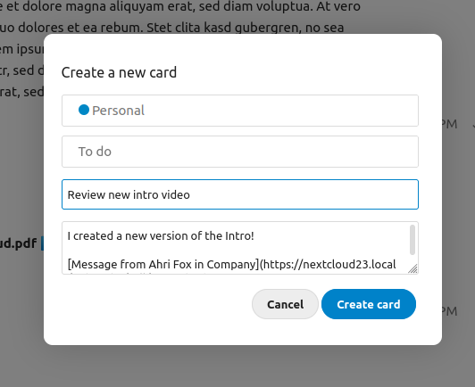
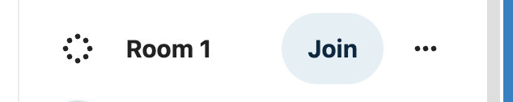
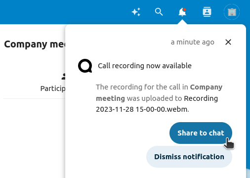
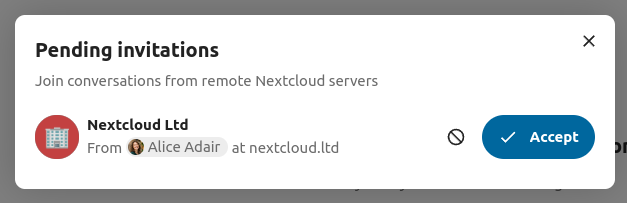
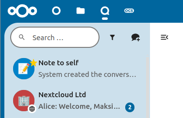

Gelmişmiş Talk özellikleri
Nextcloud Talk, kullanıcıların yararlı bulabileceği bazı gelişmiş özelliklere sahiptir.
Matterbridge
Nextcloud Talk Matterbridge bütünleştirmesi, Talk görüşmeleri ile MS Teams, Discord, Matrix ve diğerleri gibi diğer hizmetlerdeki görüşmeler arasında ‘köprüler’ oluşturabilir. Desteklenen iletişim kurallarının listesini Matterbridge github sayfasında bulabilirsiniz. <https://github.com/42wim/matterbridge#features>`_
Bir sorumlu, sohbet görüşmesi ayarlarına bir Matterbridge bağlantısı ekleyebilir.

Köprülerin her birinin kendi özel yapılandırması vardır. Çoğu için bilgi Matterbridge wiki üzerinde bulunabilir ve ... menüsündeki ayrıntılı bilgiler menüsünden erişilebilir. Ayrıca wiki sayfasına doğrudan erişebilirsiniz. <https://github.com/42wim/matterbridge/wiki>`_
Giriş
Giriş özelliği, konuklara çağrı başlayana kadar bir bekleme ekranı görüntülemenizi sağlar. Bu özellik, dış katılımcıların olduğu internet seminerleri gibi uygulamalar için idealdir.

Katılımcıların belirli bir zamanda ya da girişi el ile kapattığınızda çağrıya katılmasına izin verebilirsiniz.
Komutlar
Nextcloud, kullanıcıların komutları kullanarak işlemler yapmasını sağlar. Bir komut genellikle şöyle görünür:
/wiki airplanes
Yöneticiler komutları yapılandırabilir, etkinleştirebilir ve devre dışı bırakabilir. Kullanıcılar hangi komutların kullanılabileceğini öğrenmek için help komutunu kullanabilir.

/help
Talk yönetici belgelerinde ayrıntılı bilgiler bulabilirsiniz
Dosyalar ile Talk
Dosyalar uygulamasında yan çubuktaki dosyalar hakkında sohbet edebilir, dosyayı düzenlerken bir çağrı yapabilirsiniz. Önce sohbete katılmanız gerekir.


Ardından, dosyayı düzenlemeye başladığınızda bile diğer katılımcılarla sohbet ya da çağrı yapabilirsiniz.

Talk içinde dosya için bir görüşme oluşturulur. Oradan sohbet edebilir ya da sağ üstteki ... menüsünü kullanarak dosyaya geri dönebilirsiniz.

Sohbetten görevler oluşturun veya sohbette görevleri paylaşın
Tahta uygulaması kuruluysa, bir sohbet iletisinin ... menüsünü kullanabilir ve iletiyi bir tahta görevine dönüştürebilirsiniz.
 

Tahta içinden görevleri sohbet görüşmelerinde paylaşabilirsiniz.


Çalışma odaları
Çalışma odaları, daha odaklanmış tartışmalar için bir Nextcloud Talk çağrısını daha küçük gruplara ayırmanızı sağlar. Görüşmenin sorumlusu birden fazla çalışma odası oluşturabilir ve her odaya katılımcılar atayabilir.
Not
Breakout rooms are currently not available in conversations that are joinable by guests (public conversations).
Çalışma odalarını yapılandırmak
Çalışma odalarını oluşturmak için bir grup görüşmesinde sorumlu olmanız gerekir. Üst çubuk menüsüne tıklayın ve “Çalışma odalarını hazırla” üzerine tıklayın.

Oluşturmak istediğiniz oda sayısını ve katılımcı atama yöntemini belirtebileceğiniz bir pencere açılır. Burada size 3 seçenek sunulur:
Katılımcılar otomatik olarak dağıtılsın: Talk, katılımcıları odalara otomatik olarak dağıtır.
Katılımcılar el ile dağıtılsın: Katılımcıları odalara dağıtabileceğiniz bir katılımcı düzenleyicisini kullanacaksınız.
Katılımcılar oda seçebilsin: Katılımcılar çalışma odalarını kendileri seçebilir.

Çalışma odalarını yönetmek
Çalışma odaları oluşturulduktan sonra, bunları yan çubukta görebilirsiniz.

Yan çubuk başlığından
Çalışma odalarını açma ve kapatma: Bu seçenek, ana görüşmedeki tüm kullanıcıları ilgili çalışma odalarına taşır.
Tüm odalara bir ileti gönder: Bu seçenek, tüm odalara aynı anda bir ileti gönderir.
Dağıtılmış katılımcıları değiştir: Bu seçenek, hangi katılımcıların hangi çalışma odasında bulunacağını değiştirebileceğiniz katılımcı düzenleyicisini açar. Aynı zamanda bu pencereden çalışma odaları silinebilir.

Ayrıca yan çubuktaki çalışma odası ögesinden belirli bir çalışma odasına katılabilir ya da belirli bir odaya ileti gönderebilirsiniz.
Call recording
The recording feature provides users with an opportunity to:
Start and stop recordings during a call.
Record the video and audio stream of the speaker, as well as screen share.
Access, share and download recorded files for future reference or distribution.
Enabling this feature requires the recording server to be set up by the system administration.
Manage a recording
The moderator of the conversation can start a recording together with a call start or anytime during a call:
Before the call: tick the checkbox “Start recording immediately with the call” in “Media settings”, then click on “Start call”.
During the call: click on the top-bar menu, then click “Start recording”.

The recording will start shortly, and you will see a red indicator next to the call time. You can stop the recording at any time while the call is still ongoing by clicking on that indicator and selecting “Stop recording”, or by using the same action in the top-bar menu. If you do not manually stop the recording, it will end automatically when the call ends.

After stopping a recording, the server will take some time to prepare and save the recorded file. The moderator, who started the recording, receives a notification when the file is uploaded. From there, it can be shared in the chat.

Recording consent
For compliance reasons with various privacy rights, it is possible to ask participants for consent to be recorded before joining the call. The system administration has the flexibility to utilize this feature in several ways:
Disable consent completely.
Enable mandatory consent system-wide, requiring consent for all conversations.
Allow moderators to configure this option on a conversation level. In such cases, moderators can access the conversation settings to configure this option accordingly:
If recording consent is enabled, every participant, including moderators, will see a highlighted section in the “Media settings” before joining a call. This section informs participants that the call may be recorded. To give explicit consent for recording, participants must check the box. If they do not give consent, they will not be allowed to join the call.


Federated conversation
With Federation feature, users can create conversations across different federated Talk instances and use Talk features as if they were on a same server.
Important Under current development. Basic chat features are available, more to come in the future!
Feature is required to be set up by the system administration.
Send and accept invites
The moderator of the conversation can send an invite to participant on a different server:

When receiving a notification, user will see a counter of pending invites above the conversations list.

Upon clicking it, more information will be provided about inviting party, and user can either accept or decline the invitation.
{kind=link}
By accepting the invite, conversation will appear in the list as any other one.
{kind=link}